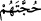
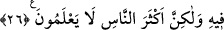

getirin, demelerinden başka delilleri yoktur.
“Onlara” dirilişi inkâr edenlere “açık açık” dirilişten bahseden, hakkı konuşan
“âyetlerimiz okunduğu zaman:” İnad ve serkeşliklerinden dolayı, bizim öldükten sonra
tekrar diriltileceğimiz konusunda “doğru iseniz, babalarımızı” kabirlerinden dirilterek
“‘getirin’ demelerinden başka bir delîlleri olmamıştır.”
Nitekim Allah Teâlâ şöyle buyuruyor: “De ki onları ilk defa yaratan diriltecektir, o
her yaratmayı bilir.” (Yâsîn, 36/79) Yine Allah Teâlâ’nın “Onu dirilten, ölüleri de
diriltir, o her şeye kâdirdir” (Fussilet, 41/39) kavli ve benzeri âyetler bu cümledendir.
“Başka bir delîlleri olmamıştır.” Bu ifâde “izâ”nın cevabıdır. Ebû Hayyân bundan
hareketle “__WORD__”da âmil olanın “__WORD__”nın cevabı olmadığını söylemiştir. Çünkü mâ-i nâfiye
kelamın başında gelmelidir. Cevaba “__WORD__” nın dahil olması ise bu konuda şart edatlarına
muhalif olduğu veçhiledir. “__WORD__ kelimesi “__WORD__nin haberi olmak üzere mansubtur.
Yâni kendisiyle Allah’ın âyetlerine muâraza edecekleri, tutunacak hiçbir delilleri
yoktur, demektir. Onların hüccetleri olmaz. Bu husus Duhân Sûresi 36. âyette geçmiştir.
Yalnız huccet olması muhal olan bu bâtıl sözleri vardır. Çünkü huccet, “kesin delil”e
denilir. Burada bunların bu bâtıl iddialarına huccet demek ya onlarla alay olsun diye bu
bâtıl sözü huccet mecrasına koymak yahut mübalağa için mukabil bir şeyi münâsîp
menzilesinde düşünmektir.
Sonuçta huccet olmayan şeye huccet denilmiştir. Bu durum Arapların “onların
selamları feci bir dayaktır” sözü kabilindendir. Yâni hiç huccetleri olmadığı için buna
huccet denilmiştir. Çünkü hucceti bu olanın hucceti yok demektir. Aynı şekilde ilk
karşılaşmada iletişim feci bir dayakla başlamışsa demek ki bunlar arasında bir
selamlaşma yoktur. Bu üsluptan başka bir maksad elde edilmez. Sanki, “onların
huccetleri huccet olmayan şeydir” denilmiş oldu.
26. De ki: Allah sizi diriltir, sonra öldürür. Sonra sizi şüphe götürmeyen kıyâmet
gününde biraraya toplar. Fakat insanların çoğu bilmezler.
De ki: “Allah sizi” başlangıçta “yaşatıyor, sonra” eceliniz geldiğinde “sizi
öldürür,” dirilişten “sonra sizi, toplayıp” ceza için “duruşma gününe getirecektir.
Bunda” o toplanmanızda “asla şüphe yoktur, ama insanların çoğu” bunu “bilmezler.”
“De ki: Allah sizi diriltir, sonra öldürür. Sonra sizi şüphe götürmeyen kıyâmet
gününde biraraya toplar.” Yoksa sizin yanlış inandığınız gibi dehrin hükmüyle yaşayıp
ölmüyorsunuz. Zira sizi baştan îcâd edip yaratmaya muktedir olan, iâde etmeye de
muktedirdir. İlâhî hikmet şüphe olmayan bir cezâ günü için toplanmayı gerektirmektedir.